Zellteilung
Wähle ein Thema, um die einzelnen Phasen der Zellteilung Schritt für Schritt zu erkunden.
Die Mitose ist die gewöhnliche Zellteilung, bei der aus einer Mutterzelle zwei genetisch identische Tochterzellen entstehen. Sie ist die Grundlage für Wachstum, Gewebereparatur und asexuelle Vermehrung. Die Mitose verläuft in klar abgegrenzten Phasen und stellt sicher, dass jede Tochterzelle den kompletten, diploiden Chromosomensatz (beim Menschen 46 Chromosomen) erhält.
Die Meiose ist eine besondere Form der Zellteilung, die ausschließlich zur Bildung von Keimzellen (Eizellen und Spermien) dient. Aus einer diploiden Ausgangszelle entstehen vier haploide Tochterzellen mit je halbiertem Chromosomensatz. Durch Rekombination und Crossing-over entsteht dabei enorme genetische Vielfalt – kein Nachkomme gleicht dem anderen.
Klicke dich durch alle fünf Phasen der Mitose.
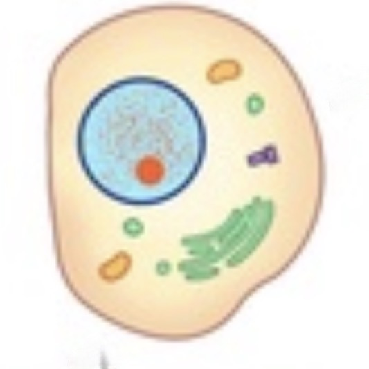
Die Interphase ist keine eigentliche Phase der Mitose, sondern die Vorbereitung der Zelle auf die Teilung. Sie macht den größten Teil des Zellzyklus aus und gliedert sich in drei Abschnitte:
G1-Phase (Gap 1): Die Zelle wächst und ist stoffwechselaktiv. Proteine und Zellorganellen werden neu gebildet. Die Zelle prüft, ob alle Voraussetzungen für eine Teilung erfüllt sind.
S-Phase (Synthesephase): Die gesamte DNA wird verdoppelt (repliziert). Aus jedem Chromosom entstehen zwei identische Schwesterchromatiden, die über das Centromer miteinander verbunden bleiben. Der DNA-Gehalt der Zelle verdoppelt sich von 2n auf 4n.
G2-Phase (Gap 2): Die Zelle wächst weiter und bereitet sich gezielt auf die Mitose vor. Tubulin-Proteine für die Spindelfasern werden gebildet, und die DNA wird auf Replikationsfehler überprüft. Erst wenn alle Kontrollpunkte passiert sind, beginnt die eigentliche Mitose.
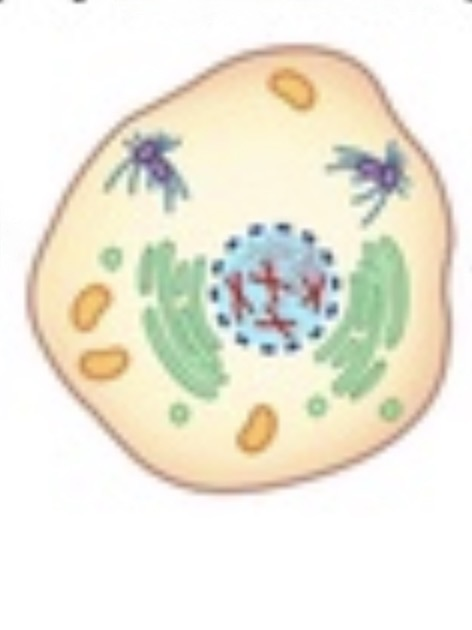
Die Prophase ist die erste sichtbare Phase der Mitose. Hier werden die zuvor unsichtbaren Chromosomen unter dem Mikroskop erkennbar.
Kondensation der Chromosomen: Die langen, fadenartig ausgestreckten DNA-Stränge werden durch Aufwicklung immer kompakter. Die Chromosomen verkürzen und verdicken sich – ein Vorgang, der als Kondensation bezeichnet wird. Jedes Chromosom besteht zu diesem Zeitpunkt bereits aus zwei Schwesterchromatiden.
Auflösung der Kernhülle: Die Membran, die den Zellkern umgibt, beginnt sich aufzulösen. Dadurch wird das Erbgut für die Spindelfasern zugänglich.
Bildung der Spindel: Die Zentriolen (bei tierischen Zellen) wandern zu den Zellpolen und beginnen, den Spindelapparat aufzubauen. Die Spindelfasern bestehen aus Mikrotubuli und werden später die Chromosomen auseinanderziehen.
Auflösung des Nukleolus: Der Nukleolus, in dem ribosomale RNA gebildet wird, löst sich am Ende der Prophase auf.
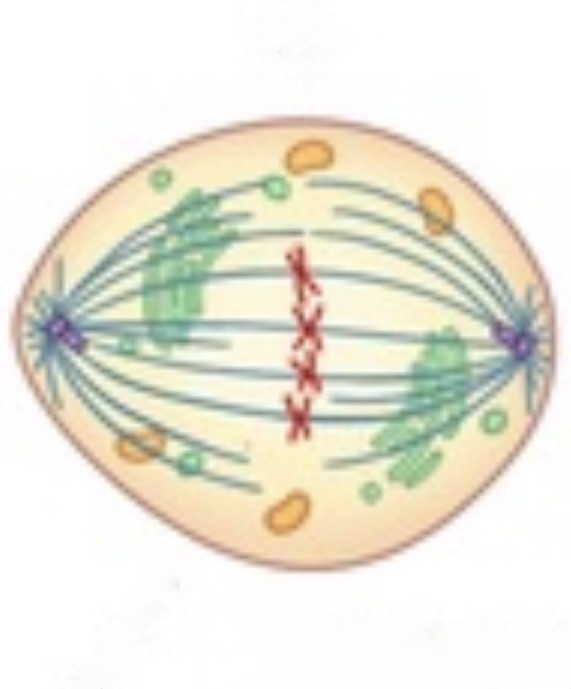
Die Metaphase ist die Phase, in der sich die Chromosomen in einer charakteristischen Anordnung präsentieren. Sie ist ideal, um Chromosomen zu zählen und zu analysieren – daher werden für Karyogramme meist Zellen in der Metaphase verwendet.
Ausrichtung in der Äquatorialebene: Alle Chromosomen ordnen sich in der Mitte der Zelle, in der sogenannten Metaphasenplatte (Äquatorialplatte) an. Diese gedachte Ebene liegt genau zwischen den beiden Zellpolen.
Anheftung der Spindelfasern: Die Mikrotubuli des Spindelapparats heften sich an die Centromere der Chromosomen an. An jedem Centromer greift je eine Spindelfaser aus dem einen und aus dem anderen Pol an – so wird sichergestellt, dass die Schwesterchromatiden in entgegengesetzte Richtungen gezogen werden können.
Kontrollpunkt: Bevor die Zelle in die nächste Phase übergeht, überprüft ein molekularer Kontrollmechanismus (Spindel-Kontrollpunkt), ob alle Chromosomen korrekt an der Äquatorialplatte befestigt sind. Nur wenn dieser Kontrollpunkt bestanden ist, setzt die Anaphase ein.
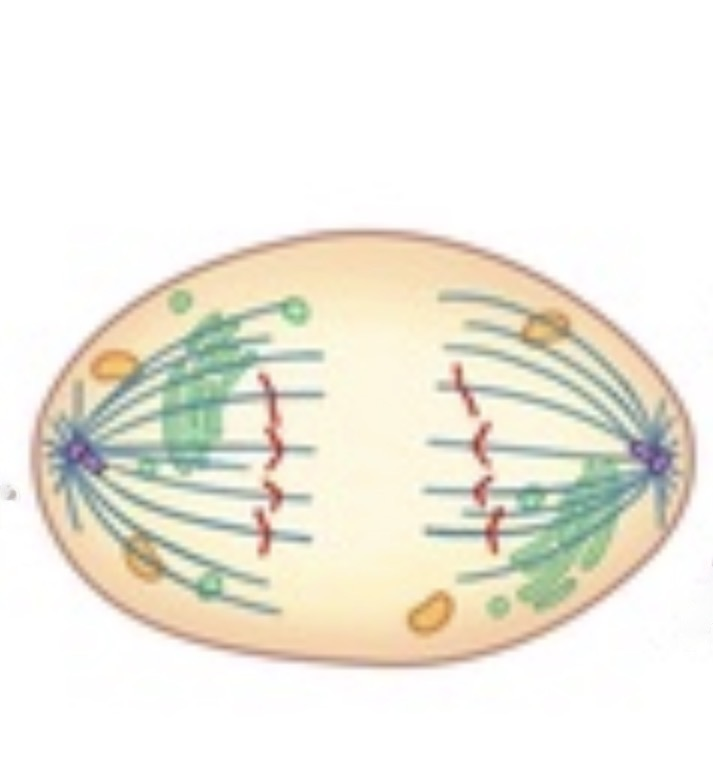
Die Anaphase ist die kürzeste, aber dramatischste Phase der Mitose. In ihr werden die Schwesterchromatiden voneinander getrennt und zu den entgegengesetzten Zellpolen gezogen.
Trennung der Centromere: Das Enzym Separase spaltet das Protein Cohesin, das die Schwesterchromatiden zusammenhält. Damit werden die Chromatiden zu eigenständigen Tochterchromatiden, die nun als vollständige Chromosomen gelten.
Wanderung der Chromosomen: Die Mikrotubuli verkürzen sich, indem Tubulin-Untereinheiten abgebaut werden. Dadurch werden die Chromosomen aktiv zu den Zellpolen hin gezogen. Die Zelle verlängert sich gleichzeitig in ihrer Längsachse.
Ergebnis: An jedem Zellpol sammeln sich jetzt 46 Chromosomen (beim Menschen). Beide Polgruppen sind genetisch identisch mit der ursprünglichen Mutterzelle. Die gleichmäßige Verteilung des Erbguts auf beide Hälften der Zelle ist damit abgeschlossen.
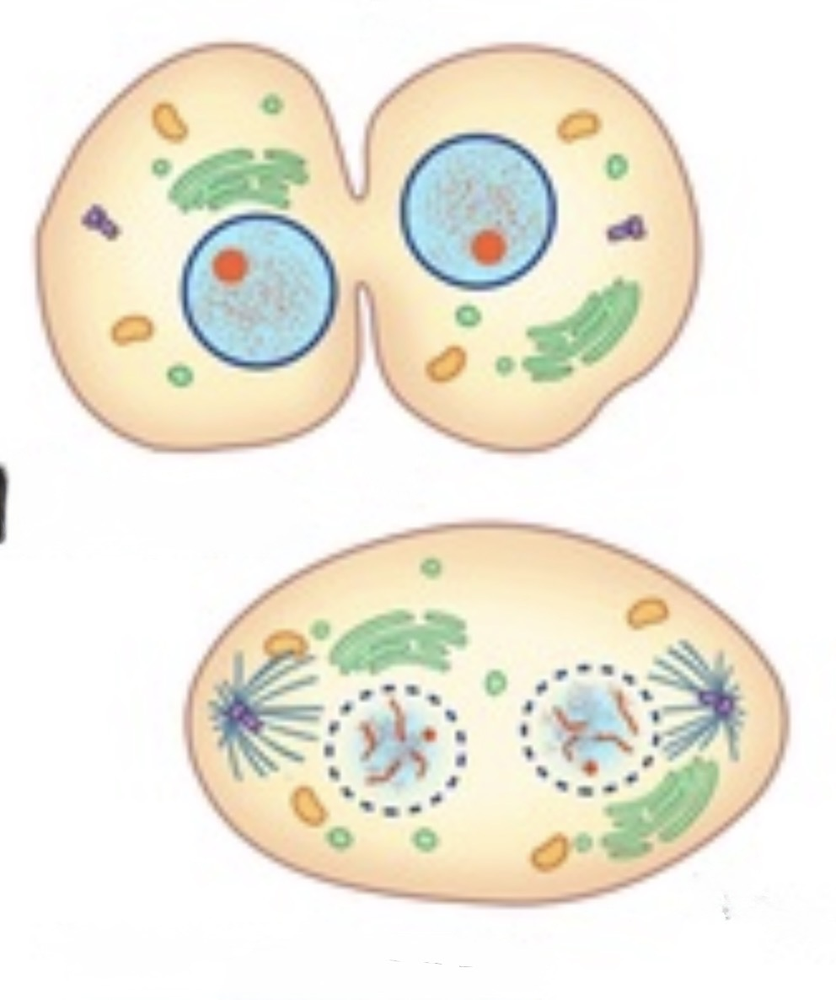
Die Telophase ist das Gegenstück zur Prophase – alle Ereignisse, die dort eingeleitet wurden, werden nun rückgängig gemacht. Gleichzeitig beginnt die Zytokinese, die eigentliche Teilung des Zellkörpers.
Dekondensation der Chromosomen: Die Chromosomen entspiralisieren sich wieder zu langen, feinen Chromatinfäden. Sie werden damit unter dem Lichtmikroskop unsichtbar.
Neubildung der Kernhülle: Um jede der beiden Chromosomengruppen bildet sich eine neue Kernhülle aus Membranvesikeln des endoplasmatischen Retikulums. Zwei neue Zellkerne entstehen, beide mit vollständigem diploiden Chromosomensatz.
Zytokinese bei tierischen Zellen: Ein kontraktiler Ring aus Aktin und Myosin schnürt die Zelle in der Mitte ein. Dieser Einschnürungsring zieht sich zusammen, bis die Zellmembran durchtrennt ist und zwei vollständige Tochterzellen entstehen.
Zytokinese bei Pflanzenzellen: Da Pflanzenzellen eine starre Zellwand besitzen, kann keine Einschnürung erfolgen. Stattdessen bildet sich in der Mitte eine Zellplatte aus Membranvesikeln des Golgi-Apparats, die sich zur neuen Zellwand ausweitet.
Die Meiose besteht aus zwei aufeinanderfolgenden Teilungen – klicke dich durch alle acht Phasen.
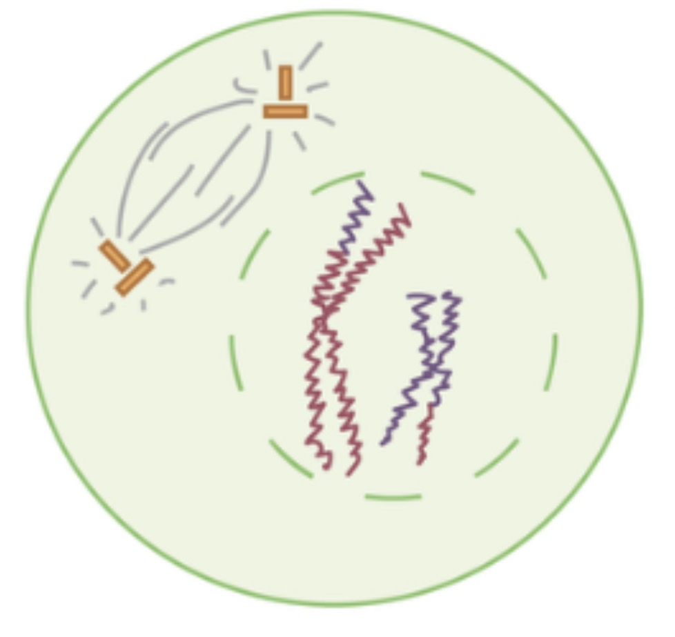
Die Prophase I ist die längste und komplexeste Phase der gesamten Meiose. Sie dauert beim Menschen mehrere Tage und beinhaltet einen entscheidenden Vorgang, der die Meiose grundlegend von der Mitose unterscheidet: das Crossing-over.
Kondensation der Chromosomen: Wie bei der Mitose werden die Chromosomen kompakt und sichtbar. Jedes Chromosom besteht aus zwei Schwesterchromatiden.
Synapsis – Paarung homologer Chromosomen: Homologe Chromosomenpaare (je eines von Mutter und Vater) lagern sich eng nebeneinander. Dieser Vorgang heißt Synapsis, das entstandene Paar Bivalent oder Tetrade (vier Chromatiden).
Crossing-over: Nicht-Schwesterchromatiden homologer Chromosomen überkreuzen sich an sogenannten Chiasmata und tauschen Chromosomenabschnitte aus. Dies führt zu einer Neukombination (Rekombination) des Erbguts – ein entscheidender Motor der genetischen Vielfalt.
Am Ende der Prophase I löst sich die Kernhülle auf und der Spindelapparat beginnt sich zu bilden.
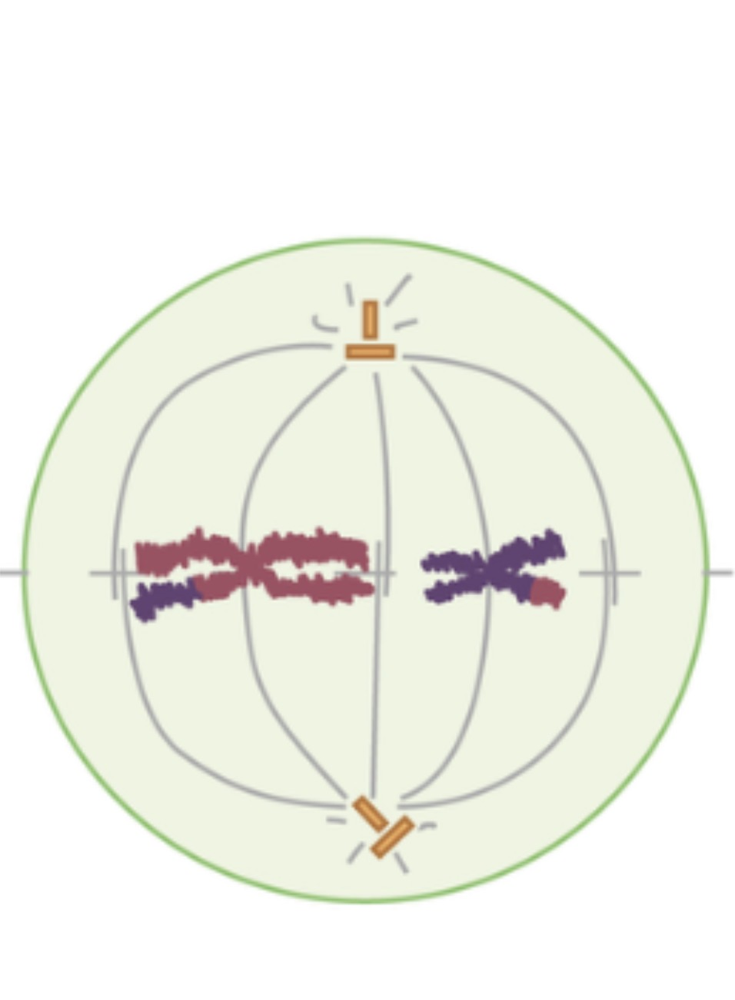
Die Metaphase I unterscheidet sich grundlegend von der Metaphase der Mitose. Hier ordnen sich nicht einzelne Chromosomen, sondern ganze homologe Chromosomenpaare (Bivalente) in der Äquatorialebene an.
Anordnung der Bivalente: Die Bivalente positionieren sich mit ihren Centromeren auf beiden Seiten der Äquatorialplatte. Die Ausrichtung ist dabei zufällig – welches homologe Chromosom zur welchen Seite zeigt, wird per Zufall entschieden.
Zufällige Verteilung: Dieser Zufallsmechanismus wird als unabhängige Segregation bezeichnet. Beim Menschen mit 23 Chromosomenpaaren entstehen dadurch 2²³ = über 8 Millionen mögliche Kombinationen – selbst ohne Crossing-over.
Anheftung der Spindelfasern: Beide Chromatiden eines Chromosoms haften an derselben Spindelfaser. Das ist der Unterschied zur Metaphase der Mitose, wo die Schwesterchromatiden an gegenüberliegende Fasern geheftet sind.
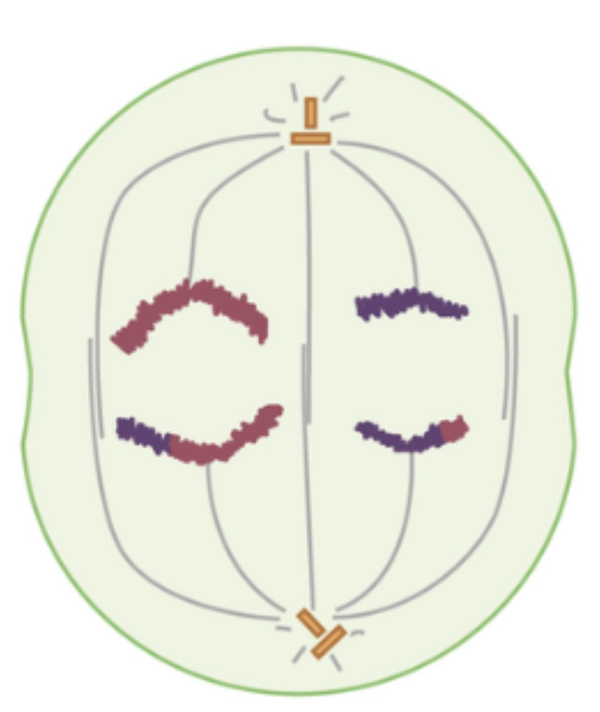
In der Anaphase I werden die homologen Chromosomen voneinander getrennt und zu den entgegengesetzten Polen gezogen – ein entscheidender Unterschied zur Mitose-Anaphase.
Trennung der homologen Chromosomen: Die Spindelfasern verkürzen sich und ziehen je ein ganzes homologes Chromosom (bestehend aus zwei Schwesterchromatiden) zu jedem Pol. Die Schwesterchromatiden bleiben dabei am Centromer verbunden – sie werden hier noch nicht getrennt.
Reduktion des Chromosomensatzes: Durch diese Trennung wird die Chromosomenzahl halbiert. An jedem Pol befinden sich jetzt nur noch 23 Chromosomen (beim Menschen) – jedes jedoch noch aus zwei Chromatiden bestehend. Der DNA-Gehalt pro Pol beträgt 2n statt 4n.
Rekombinierte Chromosomen: Da in der Prophase I ein Crossing-over stattfand, tragen die Chromosomen, die zu den Polen wandern, bereits Kombinationen aus mütterlichem und väterlichem Erbgut.
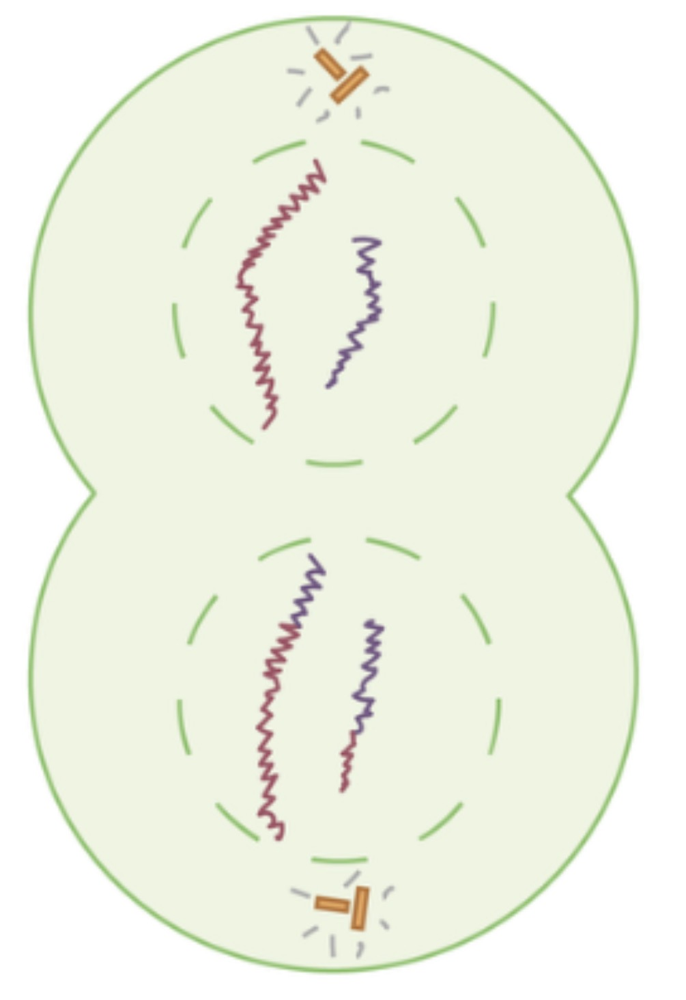
Die Telophase I beendet die erste meiotische Teilung. Sie verläuft ähnlich wie die Telophase der Mitose, hat aber ein anderes Ergebnis.
Dekondensation und Kernhülle: An beiden Polen bilden sich neue Kernhüllen um die Chromosomengruppen. Die Chromosomen können sich (je nach Organismus) etwas entspiralisieren. Bei vielen Organismen ist diese Phase sehr kurz oder fehlt fast vollständig.
Zytokinese I: Der Zellkörper teilt sich in zwei Tochterzellen. Jede Tochterzelle enthält einen haploiden Chromosomensatz (n = 23 beim Menschen), aber jedes Chromosom besteht noch aus zwei Schwesterchromatiden.
Keine DNA-Verdopplung: Im Gegensatz zum normalen Zellzyklus gibt es zwischen Meiose I und Meiose II keine S-Phase – die DNA wird nicht erneut repliziert. Beide Tochterzellen treten direkt in die Meiose II ein.
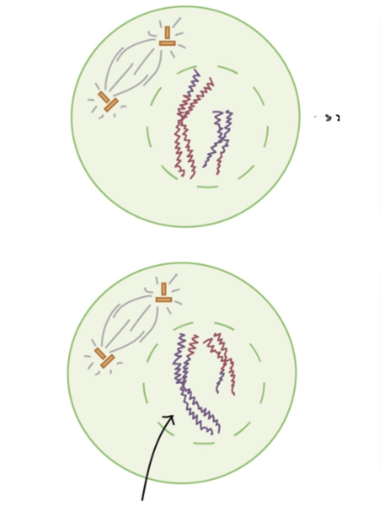
Die Meiose II beginnt in beiden Tochterzellen gleichzeitig. Sie ähnelt stark der Prophase einer normalen Mitose, startet aber mit einem haploiden Chromosomensatz.
Kondensation: Die Chromosomen kondensieren erneut und werden wieder unter dem Mikroskop sichtbar. Jedes Chromosom besteht nach wie vor aus zwei Schwesterchromatiden.
Auflösung der Kernhülle: Sofern in der Telophase I eine neue Kernhülle gebildet wurde, löst sie sich nun wieder auf.
Spindelapparat: Ein neuer Spindelapparat wird aufgebaut. Anders als in der Prophase I findet kein Crossing-over und keine Synapsis statt, da keine homologen Chromosomenpaare mehr vorhanden sind – jedes Chromosom ist jetzt einzigartig in der Zelle.
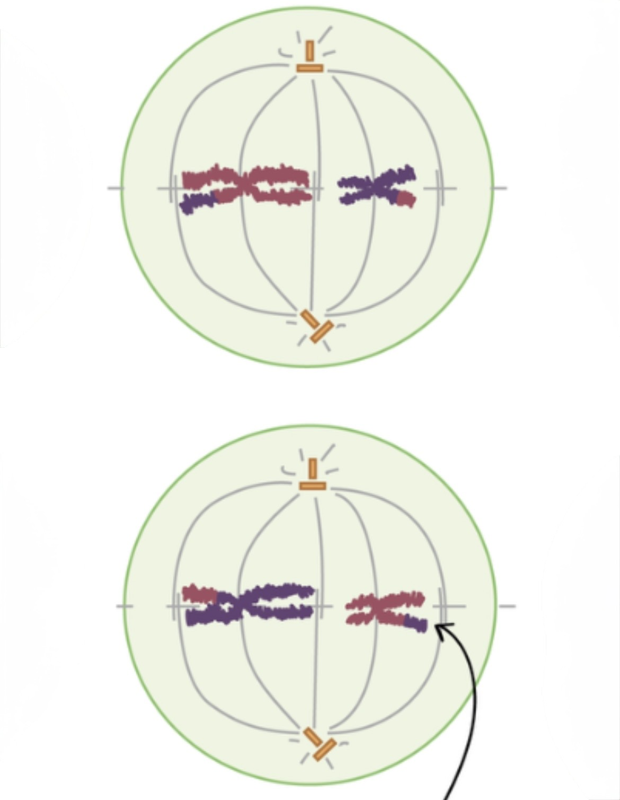
Die Metaphase II entspricht weitgehend der Metaphase der Mitose – allerdings mit halbierter Chromosomenzahl.
Ausrichtung: Die 23 Chromosomen (beim Menschen) ordnen sich in der Äquatorialebene an. Ihre Centromere liegen auf der Metaphasenplatte.
Anheftung der Spindelfasern: Dieses Mal heften sich die Spindelfasern aus gegenüberliegenden Polen an die beiden Schwesterchromatiden jedes Chromosoms – wie bei der normalen Mitose. Damit ist die Bühne für die Trennung der Schwesterchromatiden bereitet.
Rekombinierte Chromosomen: Die in der Prophase I rekombinierten Chromosomen liegen nun geordnet auf der Metaphasenplatte. Die genetische Einzigartigkeit der entstehenden Keimzellen ist bereits angelegt.
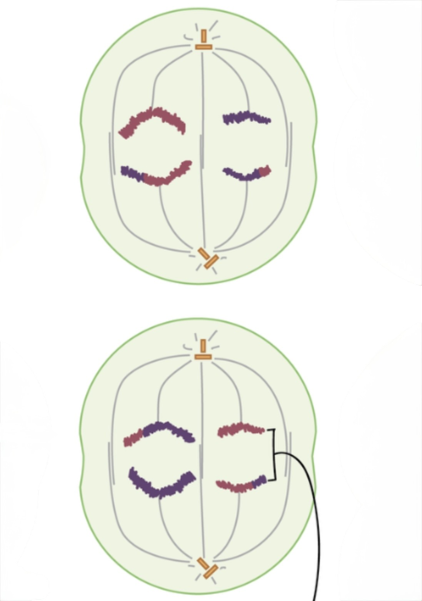
Die Anaphase II verläuft wie die Anaphase der Mitose: Die Schwesterchromatiden werden getrennt und zu den Polen gezogen.
Trennung der Schwesterchromatiden: Das Protein Cohesin, das die Schwesterchromatiden zusammenhält, wird durch Separase gespalten. Jede Chromatide wird nun als eigenständiges Chromosom betrachtet.
Wanderung zu den Polen: Die Einzelchromosomen wandern durch Verkürzung der Spindelfasern zu den Zellpolen. An jedem Pol sammeln sich nun 23 Einzelchromosomen.
Einzigartigkeit: Da jedes dieser 23 Chromosomen durch Crossing-over eine individuelle Kombination aus mütterlichem und väterlichem Erbgut trägt, sind alle vier entstehenden Keimzellen genetisch verschieden – selbst untereinander.
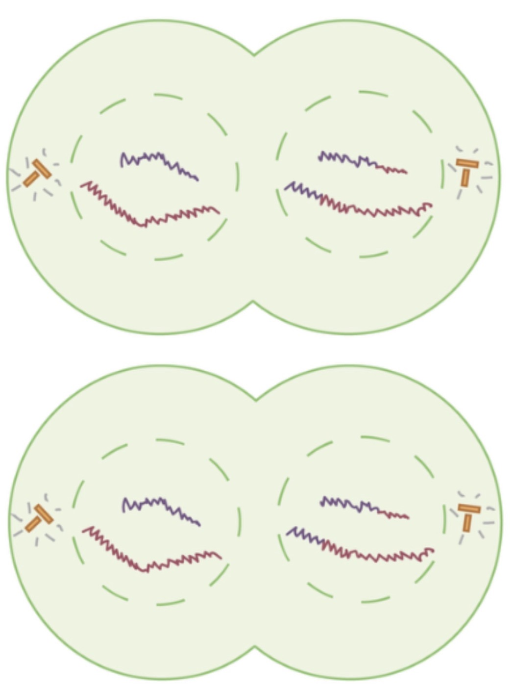
Die Telophase II und die anschließende Zytokinese II beenden die Meiose. Am Ende dieses Prozesses entstehen vier haploide Tochterzellen.
Kernhüllen und Dekondensation: Um jede Chromosomengruppe bildet sich eine neue Kernhülle. Die Chromosomen entspiralisieren sich wieder, der Nukleolus wird neu gebildet.
Zytokinese II: Beide Tochterzellen aus der Meiose I teilen sich nun ebenfalls. Es entstehen insgesamt vier Tochterzellen.
Ergebnis der Meiose: Vier haploide Zellen (n = 23 beim Menschen) mit je einem einfachen Chromosomensatz. Jede der vier Zellen ist genetisch einzigartig – durch Crossing-over in der Prophase I und die zufällige Verteilung der homologen Chromosomen in der Anaphase I.
Spermatogenese vs. Oogenese: Bei der männlichen Keimzellbildung (Spermatogenese) entstehen aus den vier Zellen vier funktionsfähige Spermien. Bei der weiblichen (Oogenese) hingegen entsteht nur eine Eizelle – die übrigen drei Zellen werden als Polkörperchen abgeschnürt und degenerieren.